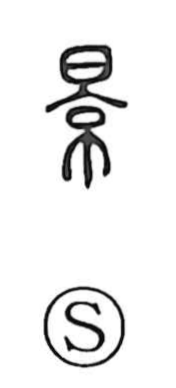

景

Uncategorized
Kun: | On: kei
scenery ・ scene ・ view ・ light ・ shadow
Explanation
景 is a phono-semantic character. Its phonetic is 京, the figure of an arched fortress gate topped by a watchtower, which provides the reading kei. The character conveys a state suffused with light, and from this core sense it comes to mean both light itself and, by extension, the shadow that light casts. Hence its use for scenery, a scene, and the outward look or aspect of things as they stand in the light. In oracle-bone and bronze inscriptions one even finds personal names written with 京, and the related character 影 names the image of something in shadow brought forth by light.